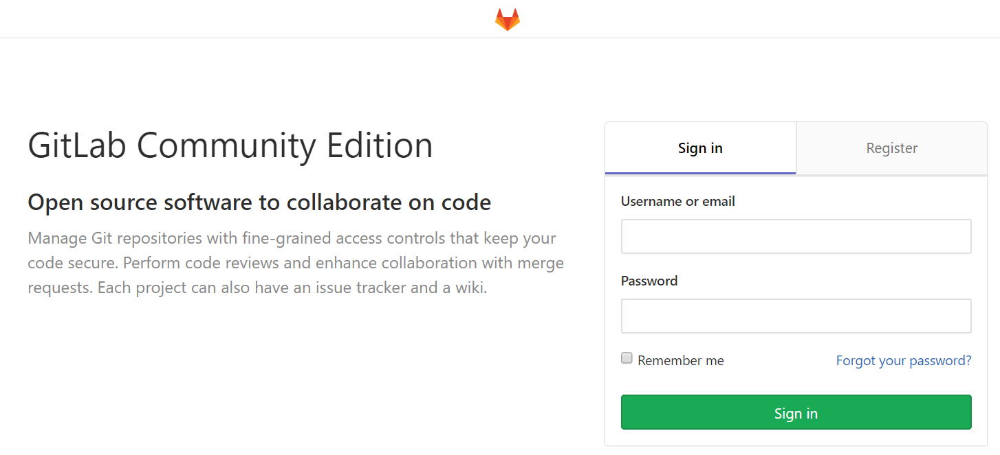

Follow the instructions on Omnibus package installation
Install and configure the necessary dependencies
sudo apt-get update
sudo apt-get install -y curl openssh-server ca-certificates
Add the GitLab package repository and install the package
This step, we use the mirrors of TUNA, follow the instructions on Gitlab Community Edition 镜像使用帮助
curl https://packages.gitlab.com/gpg.key 2> /dev/null | sudo apt-key add - &>/dev/null
echo "deb https://mirrors.tuna.tsinghua.edu.cn/gitlab-ce/ubuntu bionic main" > /etc/apt/sources.list.d/gitlab-ce.list
sudo apt-get update
sudo apt-get install gitlab-ce
The edition names of Ubuntu like bionic are on ubuntu.
Modify GitLab configuration settings
Setting are in /etc/gitlab/gitlab.rb.
# Set Url
external_url 'http://localhost:9080'
# Error 502 and 'GitLab is not responding' may be unicorn port occupancy
unicorn['port'] = 8801
After configuration, you need:
gitlab-ctl reconfigure
gitlab-ctl restart
Visit http://localhost:9080, you will be asked to set your password with user name root.

Configure Email
gitlab_rails['gitlab_email_enabled'] = true
gitlab_rails['gitlab_email_from'] = 'admin@company.com'
gitlab_rails['gitlab_email_display_name'] = 'admin'
gitlab_rails['gitlab_email_reply_to'] = 'admin@company.com'
gitlab_rails['gitlab_email_subject_suffix'] = 'company'
gitlab_rails['smtp_enable'] = true
gitlab_rails['smtp_address'] = "smtp.exmail.qq.com"
# gitlab_rails['smtp_port'] = 465
gitlab_rails['smtp_user_name'] = "admin@company.com"
gitlab_rails['smtp_password'] = "password"
gitlab_rails['smtp_domain'] = "exmail.qq.com"
gitlab_rails['smtp_authentication'] = "login"
# gitlab_rails['smtp_enable_starttls_auto'] = true
# gitlab_rails['smtp_tls'] = false
# Test for sending email
gitlab-rails console
# In the console:
Notify.test_email('user@company.com', 'Message Subject', 'Message Body').deliver_now
Modify root user password
sudo gitlab-rails console production
# In the console:
# view all users
User.all
# select root user
u=User.where(id:1).first
# set and confirm password
u.password='12345678'
u.password_confirmation='12345678'
# save and exit
u.save!
quit
Some errors
The first time I ran this, it was fail and showed:
Couldn't find an alternative telinit implementation to spawn.
So I tried running the command again and after some messages, the process was blocked by:
ruby_block[supervise_redis_sleep] action run
Following 安装 GitLab 出现 ruby_block[supervise_redis_sleep] action run, I tried:
sudo systemctl restart gitlab-runsvdir
But failed. It said:
System has not been booted with systemd as init system (PID 1). Can't operate.
According to 【WSL】Windows Subsystem for Linux 安裝及基本配置！, that’s because WSL doesn’t support systemd.
Tried run /opt/gitlab/embedded/bin/runsvdir-start in the background (another console) according to WSL (Windows Subsystem for Linux) findings.
Then：
gitlab-ctl reconfigure
gitlab-ctl restart
But when visited 127.0.0.1, it showed 502 Whoops, GitLab is taking too much time to respond.
After alot of searching, I quit.
Uninstall GitLab.
sudo gitlab-ctl stop
find / -name gitlab | xargs rm -rf
sudo apt-get remove gitlab-ce
dpkg --get-selections | grep gitlab
sudo apt-get --purge remove gitlab-ce
Everything’s quiet.
Update:
2019.03.19 Succeed on another Machine.
Refer:
Related: